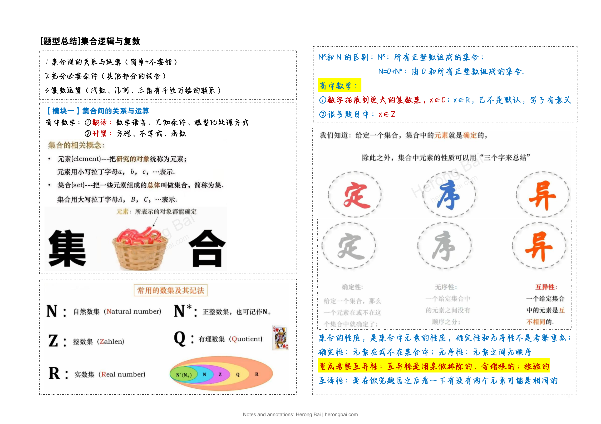

ORIGINAL LEARNING NOTES
Logic, Inequalities & Selected Function Topics
37 pages · Chinese original · Herong Bai
The complete notes, retaining the original layout, colors and diagrams, with an author watermark added.
Page 1 / 37

Choose a topic or page above. On a phone, use pinch-to-zoom to read the details.
This page could not be loaded. Please try again.